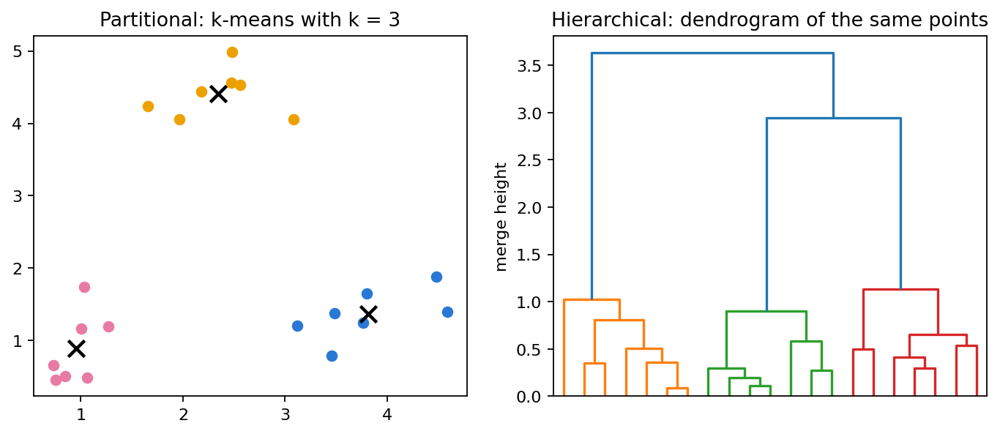
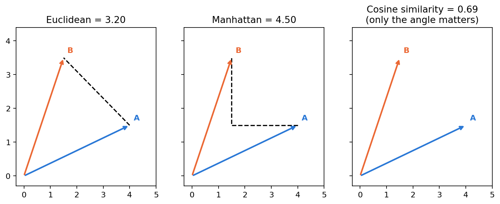
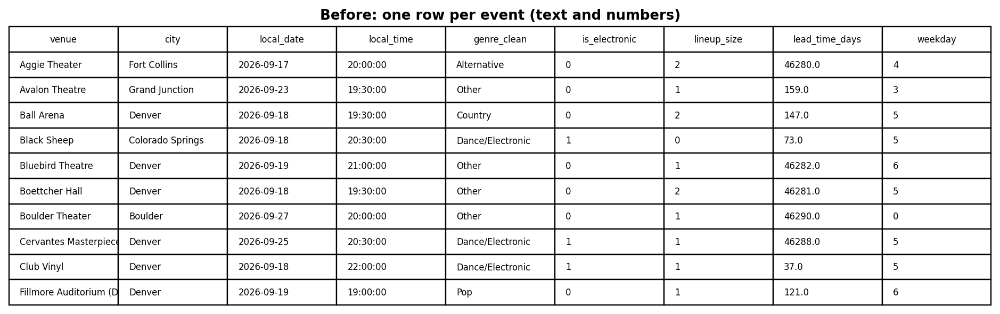
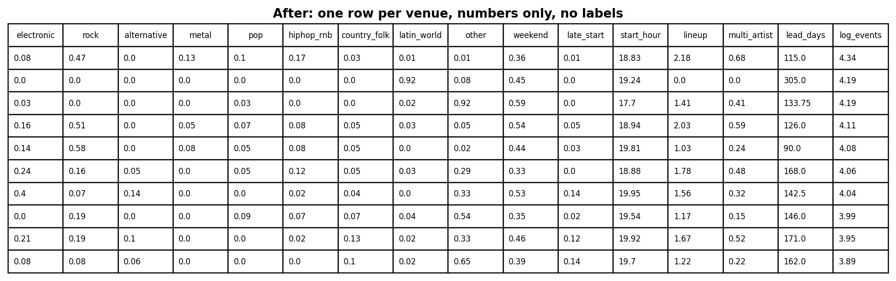
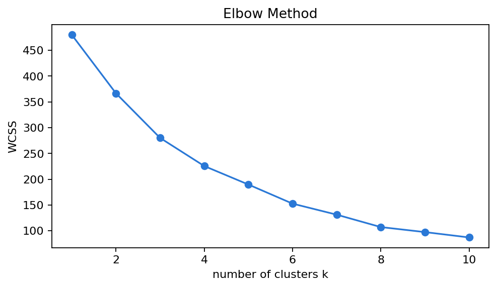
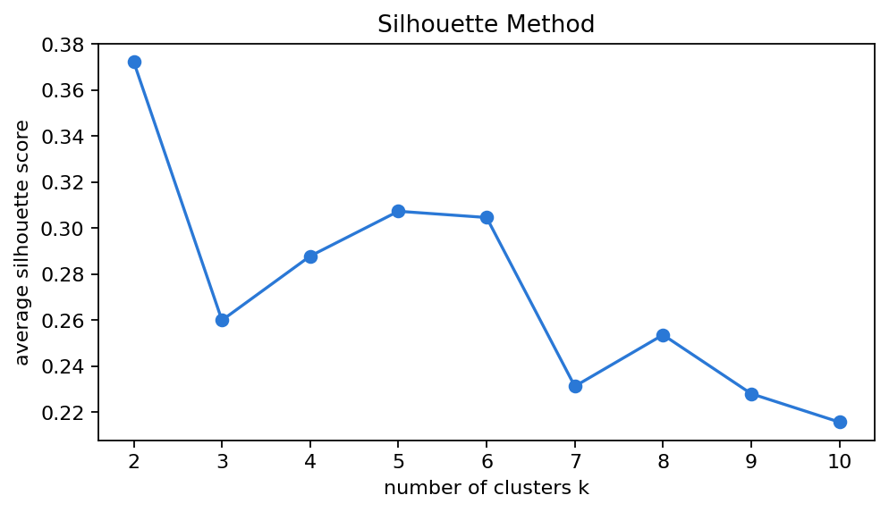
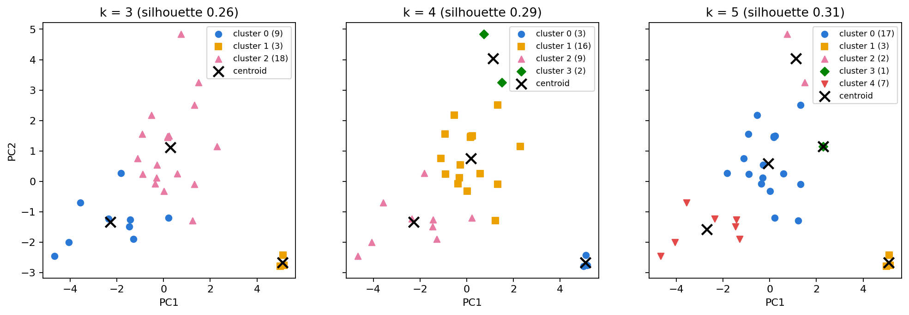
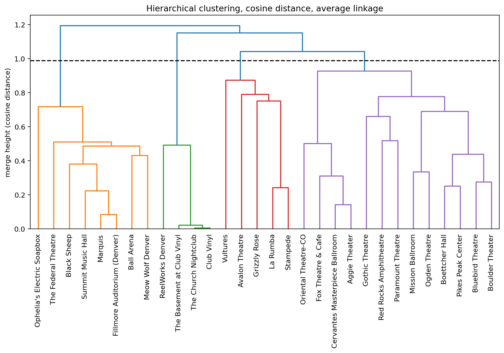

Clustering
Do Colorado venues fall into natural groups by the way they program their calendars?
Overview
Clustering is an unsupervised method: it takes rows of data with no labels and groups them so that rows in the same group are similar and rows in different groups are not. There are two main types. Partitional clustering, such as k-means, splits the data into k groups chosen in advance: each row goes to its nearest centroid, each centroid moves to the mean of its rows, and this repeats until nothing changes. Hierarchical clustering does not need k: it starts with every row as its own cluster and keeps merging the two closest clusters, which produces a tree (dendrogram) that can be cut at any height.

Both methods need a distance metric. k-means uses Euclidean distance, the straight line between two rows. The hierarchical clustering here uses cosine similarity, which compares the angle between two rows and ignores their length; the distance is 1 − cosine similarity. Manhattan distance is shown for comparison.

How clustering is used here. Each venue is described by numbers about what and how it books, and the venues are clustered without labels. If groups appear, they show which rooms program alike, which is useful for recommending a similar night at a similar room.
Data Prep
Clustering needs unlabeled numeric data: numeric because the methods compute distances, and unlabeled because the method must find the groups on its own. The cleaned data from Module 1 is one row per event with text columns (Figure 3), so it was turned into one row per venue with 16 numbers: the share of its events in each genre group (9 columns), the share on Friday/Saturday, the share starting at 9 pm or later, the average start hour, the average number of artists per bill, the share of multi-artist bills, the median days between on-sale and the event, and the log of its number of events. Only venues with at least 8 events were kept: 30 venues (1,082 of 1,207 live events, snapshot of 11 October 2026). Venue names were removed (Figure 4), and the columns were standardized (mean 0, standard deviation 1) in the code so that no column dominates the distances.


- Sample of the clustering data: exports/module2/venue_features.csv
- The same data with venue names (used only to read the results): exports/module2/venue_profiles_labeled.csv
Code
Python, with scikit-learn for k-means and scipy for hierarchical clustering.
- venue_features.py — builds the venue table (Data Prep)
- clustering.py — k-means, elbow, silhouette, and hierarchical clustering with cosine distance
X = StandardScaler().fit_transform(df)
#k-means for k = 3, 4, 5
km = KMeans(n_clusters=k, n_init=10, random_state=42).fit(X)
silhouette_score(X, km.labels_)
#hierarchical clustering with cosine distance
Z = linkage(X, method="average", metric="cosine")
dendrogram(Z, labels=names)
labels = fcluster(Z, t=0.99, criterion="distance")Results
Choosing k
The elbow plot has no sharp bend, but the drop in WCSS gets smaller after k = 4. The silhouette score is highest at k = 2 (0.37), but that split only separates the three Club Vinyl rooms from everything else. After that it is 0.26 for k = 3, 0.29 for k = 4 and 0.31 for k = 5, so there is structure, but it is moderate.


k-means with k = 3, 4 and 5

- k = 3: the three electronic nightclubs; nine rock and multi-artist rooms; and the other 18 venues.
- k = 4: the same, but La Rumba and Stampede (Latin and country dance halls) form their own cluster.
- k = 5: Grizzly Rose becomes a cluster of one venue, which is not a useful group.
k = 4 is the one kept, since it is near the elbow and it is also what the hierarchical clustering suggests (below). Its clusters:
| Cluster (k = 4) | Venues | Averages |
|---|---|---|
| 0 · Electronic nightclubs (3) | Club Vinyl, The Basement at Club Vinyl, The Church Nightclub | 98% electronic, 97% on Fri/Sat, start around 10 pm |
| 1 · Theatres & concert halls (16) | Boettcher Hall, Paramount, Pikes Peak Center, Mission Ballroom, Ogden, Bluebird, Gothic, Boulder Theater, Cervantes, Aggie, Oriental, ReelWorks, Fox Theatre, Avalon, Vultures, Grizzly Rose | mixed genres (49% “Other”, 15% electronic), mostly one headliner |
| 2 · Rock & multi-artist rooms (9) | Marquis, Summit Music Hall, Black Sheep, Fillmore Auditorium, Ball Arena, Meow Wolf, Red Rocks, Ophelia’s, The Federal Theatre | 41% rock, 53% of bills with 2+ artists, start around 7:20 pm |
| 3 · Latin & country dance halls (2) | La Rumba, Stampede | 69% Latin, 26% country, almost no named artists, on sale 265 days ahead |
Hierarchical clustering (cosine distance)

The tallest gap between merges is between heights 0.93 and 1.04, and a cut there gives four groups, so hclust suggests k = 4, the same as k-means. The two methods agree on 25 of the 30 venues:
| k-means \ hclust | rock group | nightclub group | Latin/country group | theatre group |
|---|---|---|---|---|
| nightclubs | 0 | 3 | 0 | 0 |
| theatres | 0 | 1 | 3 | 12 |
| rock & multi-artist | 8 | 0 | 0 | 1 |
| Latin & country | 0 | 0 | 2 | 0 |
The differences come from the distance. Cosine only looks at the direction of a venue’s profile, so venues that lean the same way as an extreme group, just less strongly, join it: ReelWorks (58% electronic) joins the nightclubs, and Grizzly Rose, Vultures and Avalon (few named artists, no multi-artist bills) join the Latin and country halls. Red Rocks moves from the rock group to the theatres.
Conclusions
Colorado venues do have identities, but only some are sharp. The electronic nightclubs and the rock and multi-artist rooms stand out with every method and every k; the Latin and country dance halls form a smaller group; and half of the venues are theatres that book a little of everything. Electronic music is not limited to the clubs: it is also about 15% of the theatres’ calendars (40% at Mission Ballroom), but those shows start earlier and look like concerts rather than club nights. For recommendations, this means when and how a venue books (start time, weekend, number of artists) matters as much as the genre label.